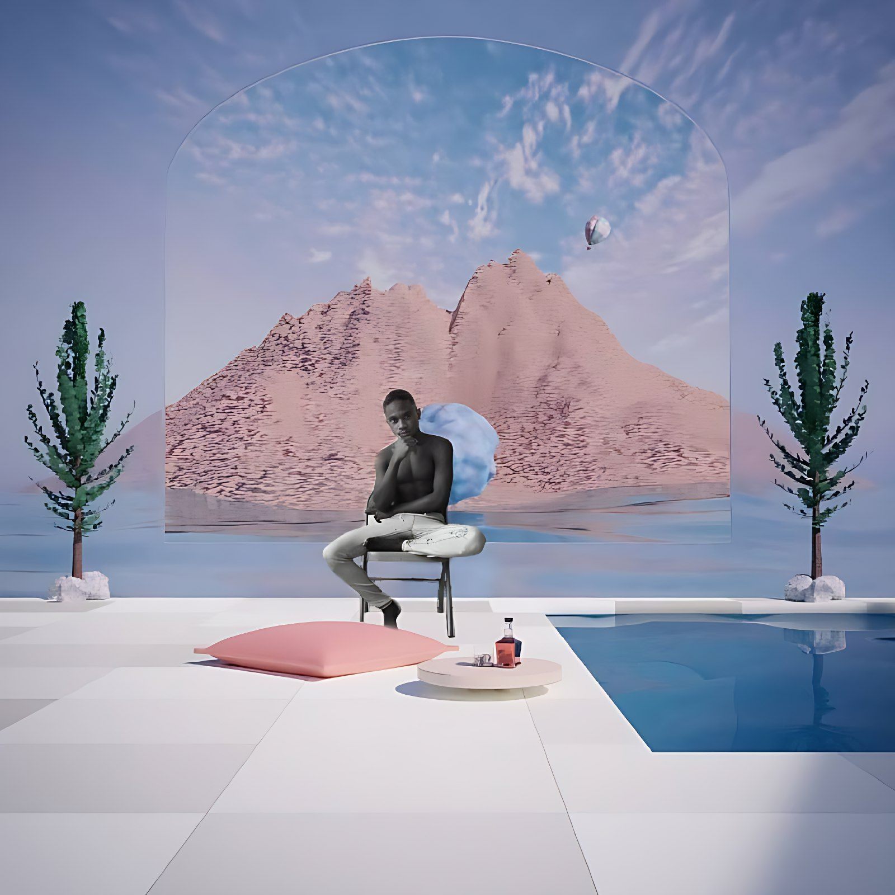
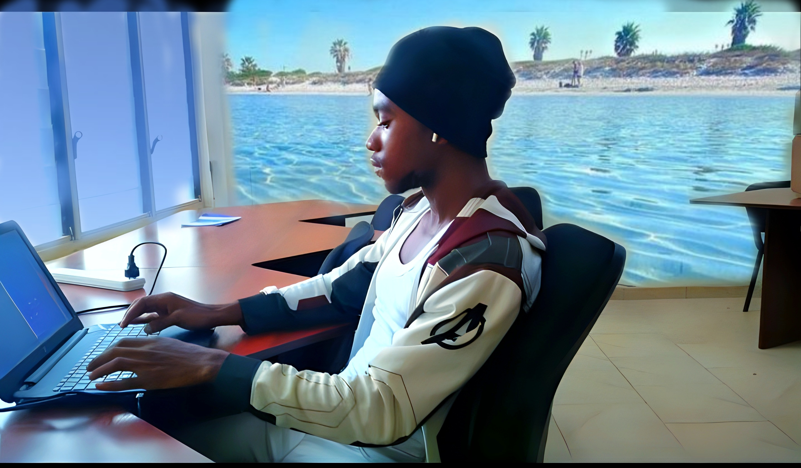

About Me
My name is Ebenezer Cobbinah (Index: [0721000116]), but I'm better known as "0xide". Fascinated by science and technology since childhood, I have always loved uncovering the inner workings of electronic devices. As I've grown, my passion for technology and programming has only intensified. I aspire to become a Research Scientist focused on machine learning algorithms.
I am particularly interested in Large Language Models (LLMs) and how they learn from vast amounts of data—textbooks, academic papers, and forum discussions. My goal is to develop reinforcement learning algorithms that solve real-world problems and enhance human lives. Specifically, I'm exploring the intersection of AI and hardware, using deep neural networks and evolutionary algorithms to design the next generation of RISC and CISC-based CPUs and SoCs.